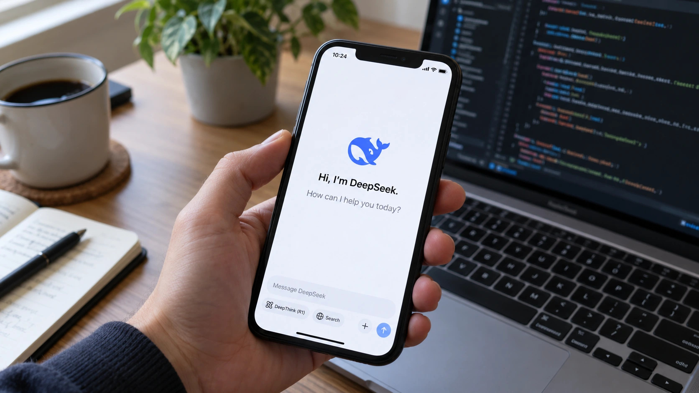

DeepSeek’s Reported $15 Billion Round Raises the Stakes in the AI Funding Race
Reports put DeepSeek’s new financing near $15 billion, but closing terms, valuation and an eventual public listing remain distinct questions.

DeepSeek is approaching a financing round of roughly 100 billion yuan, or $15 billion, according to reports published October 22. The scale would give the Chinese AI developer substantially more capital to compete, while underscoring that a reputation for efficient models does not remove the need to fund computing infrastructure and commercial operations.
Bloomberg reported the financing first, citing people familiar with it. Reuters subsequently described the round as nearing completion and said terms could still change. CATL and Tencent were named among major investors. Neither account constitutes a company announcement of settled terms, and their descriptions of the closing stage should not be flattened into an unconditional claim that all money has arrived.
Funding, valuation and an IPO are different events
Bloomberg’s account said the fundraising target expanded from 50 billion yuan to 80 billion yuan before reaching about 100 billion. That trajectory points to investor appetite for a larger transaction. It does not establish the final ownership stakes, investor protections or valuation attached to the capital being raised.
The Wall Street Journal reported a valuation of roughly $74 billion before the round’s final close, according to Quartz’s attributed account. A pre-money valuation measures the business before new investment; it is different from both the size of the financing and the resulting post-money valuation. Adding two headline figures is only meaningful if their timing and accounting basis match.
The Journal also reported preparations for a possible Shanghai listing and a role for CITIC Securities. A private transaction and a public offering have different disclosure and approval requirements. As our guide to the IPO process explains, hiring advisers or planning a listing does not create a publicly tradable security or guarantee a flotation date.
The product business behind the fundraising
DeepSeek’s official website currently promotes its V4.1 Flash update and directs developers to its API platform. Its documentation also describes Search and Fetch interfaces: one returns structured web-search results, while the other retrieves a webpage’s contents. These are product capabilities documented by the company, rather than evidence confirming its financing or commercial success.
The distinction is useful because developer adoption and financial sustainability are measured differently. A service can be attractive to programmers because it is inexpensive and capable, yet still need substantial investment to support a larger customer base. Lower computing cost per task can improve unit economics while total spending rises as usage expands.
Our analysis of AI inference economics describes that tension. Serving a model repeatedly generates operating costs, unlike simply publishing a research result. Investors assessing a model developer therefore need to separate the cost of creating new systems from the expense of answering customers’ requests and maintaining reliable services.
A financing round provides resources to manage those demands, but is not revenue earned from users. Likewise, a company valuation is not cash available for equipment, hiring or electricity. Those distinctions become more consequential as AI transactions grow large enough for financing headlines to overshadow the underlying business that must eventually support them.
What the money would and would not prove
A large raise can give a developer more freedom to secure computing resources, recruit staff and absorb the cost of product expansion. These are possible uses of capital, not a verified allocation of this reported round. Public reporting has not supplied a complete, company-confirmed spending plan or a full set of transaction documents.
For customers, the practical question is whether additional resources translate into dependable capacity and useful products. For investors in the wider sector, the question is whether competition from better-funded developers pressures pricing or encourages still more spending. Our discussion of the gap between AI investment and monetization provides the relevant framework without assuming that every financing produces the same outcome.
The next decisive evidence would be confirmation of final closing terms, subsequent company disclosures and, if a listing proceeds, formal offering documents. Until then, the reported amount signals a potentially significant change in DeepSeek’s financial resources. It does not establish a final market value, an IPO timetable or an independently verified return on that capital.
Sources and methodology
Sources checked October 22, 2026. Reported findings and company or regulatory statements are attributed in the text; discussion of financial implications is editorial analysis. The generated cover is illustrative.
- Reuters: financing nearing completion, sources say
- Bloomberg News: reported 100 billion yuan financing
- The Wall Street Journal: financing and potential IPO
- Quartz: attributed account of Journal and Bloomberg reporting
- DeepSeek: official products and API documentation
- DeepSeek: Search and Fetch API documentation